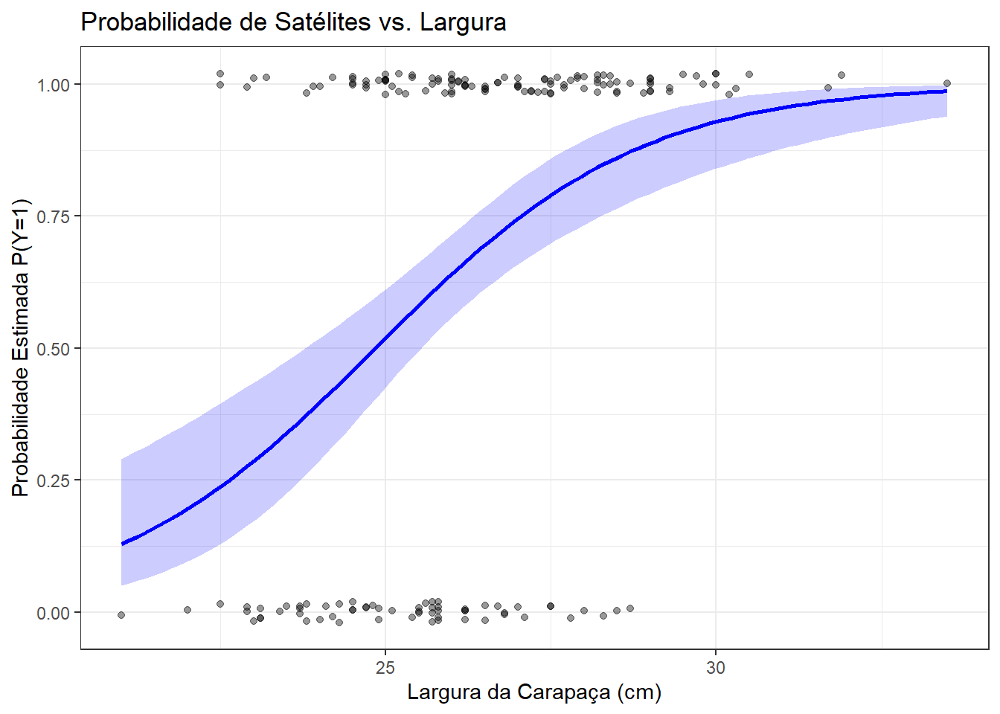
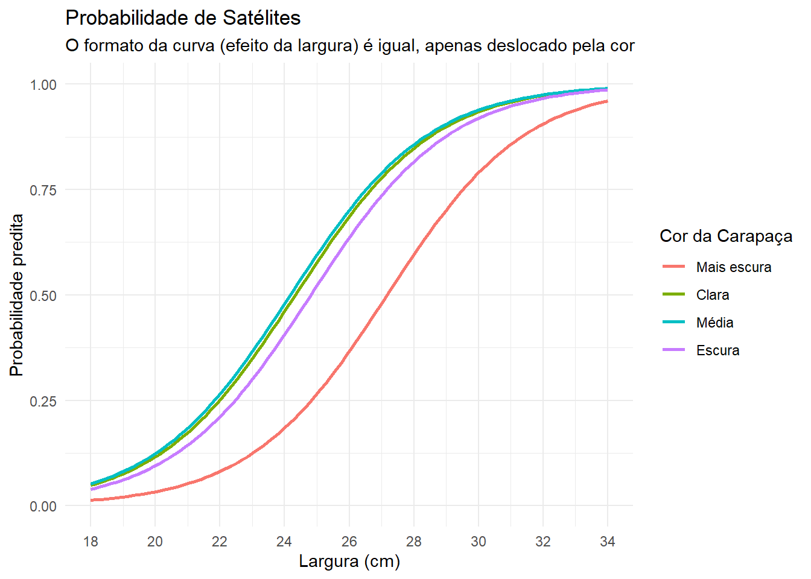

library(readxl)
library(ggplot2)
horseshoe<- read_excel("Dados/horseshoe.xlsx")
reglog1.hc<- glm(y ~ width,
family = binomial(link = "logit"),
data = horseshoe)16 Regressão logística: inferência e aplicações
Neste tópico continuaremos a falar sobre regressão logística, mas com enfoque na sua aplicação. Iniciaremos pelos métodos inferenciais e passaremos para a extensão do modelo para o caso de múltiplas variáveis regressoras.
Essa aula é baseada principalmente no Capítulo 4 - Logistic regression do livro An introduction to categorical data analysis (Agresti, 2007).
16.1 Introdução
Nas aulas anteriores, apresentamos o modelo logístico como uma escolha natural para descrever o efeito de um preditor sobre uma variável resposta binária. O modelo de regressão logística é dado por
\[ \textrm{logit} (\pi_i) = \log \left( \dfrac{\pi_i}{1-\pi_i} \right) = \beta_0 + \beta_1 x_{i}. \tag{16.1}\]
e podemos assumir, a princípio, que \(X\) é uma variável aleatória quantitativa.
A fórmula da regressão logística anterior implica a seguinte fórmula para a probabilidade \(\pi_{i}\)
\[ \pi_i = \dfrac{\exp(\beta_0 + \beta_1 x_i)}{1+\exp(\beta_0 + \beta_1 x_i)} = \dfrac{e^{\beta_0 + \beta_1 x_i}}{1+e^{\beta_0 + \beta_1 x_i}}. \]
Uma importante interpretação do modelo de regressão logística envolve o uso da chance (odds) e da razão de chances (odds ratio). Para o modelo (Equation 16.1), a chance de ocorrência da resposta 1 ou chance de sucesso é igual a
\[ \dfrac{\pi}{1-\pi} = \textrm{e}^{\beta_0 + \beta_1 x} = \textrm{e}^{\beta_0}(\textrm{e}^{\beta_1})^x . \tag{16.2}\]
Como foi visto, a relação exponencial apresentada na Equation 16.2 fornece uma interpretação prática para o coeficiente \(\beta_1\), ou seja, a odds é multiplicada por \(e^{\beta_1}\) para cada unidade que se aumenta em \(x\). Quando \(\beta_1 = 0\), \(e^{\beta_1} = 1\) e a odds não muda ou não é influenciada por mudanças em \(X\).
Até aqui, focamos nos fundamentos da regressão logística e interpretação do modelo. Também apresentamos uma visão geral dos Modelos Lineares Generalizados, pois essa classe de modelos tem a regressão logística como caso especial.
Nessa segunda parte, vamos apresentar a inferência estatística para esse modelo adotando um enfoque mais aplicado. Os detalhes desses procedimentos inferenciais poderão ser aprofundados nos cursos de Inferência ou Modelos Lineares Generalizados.
16.2 Inferência em regressão logística
16.2.1 Disposição dos dados: agrupados e não agrupados
Antes de abordar os principais métodos inferenciais, é importante apresentar as duas formas de disposição de dados binários. No modelo linear normal, em geral temos uma linha para cada indivíduo. Já no contexto de regressão logística, é comum que conjuntos de observações tenham os mesmos valores de variáveis preditoras (ex. preditores discretos). Nesses casos, no ajuste do modelo pode-se tratar as observações como contagens de sucessos em um total de ensaios. Essa forma de apresentação é denominada dados binários agrupados, ou seja, os dados são os totais de sucessos e de falhas em cada combinação da variável preditora. O caso em que cada observação (linha do banco de dados) é um único resultado binário é denominado dados binários não agrupados.
Considere o exemplo extraído de Agresti (2007, p. 69) e apresentado a seguir.
Foi realizado um estudo epidemiológico com 2484 indivíduos para investigar o ronco como um possível fator de risco para doença cardíaca. Os indivíduos foram classificados de acordo com o nível de ronco, como reportado por seus cônjuges. Os dados observados são apresentados na tabela a seguir.
| Ronco (Categoria) | Doença: Sim (\(y\)) | Doença: Não | Total (\(n\)) | Proporção Sim (\(\hat{\pi}\)) |
|---|---|---|---|---|
| Nunca | 24 | 1.355 | 1.379 | 0,017 |
| Ocasional | 35 | 603 | 638 | 0,055 |
| Quase toda noite | 21 | 192 | 213 | 0,099 |
| Toda noite | 30 | 224 | 254 | 0,118 |
Faça um esboço de como seria um data frame para o exemplo de ronco e doença cardíaca para cada uma das formas de disposição dos dados.
Para ajustar modelos de regressão logística no R, utilizamos a função glm() com o argumento family = binomial. Na especificação do modelo, adaptamos a sintaxe da variável resposta à estrutura dos dados: para dados individuais (não agrupados), a resposta (\(Y\)) deve ser um vetor binário de 0s e 1s, enquanto para dados agrupados, a resposta exige uma matriz de duas colunas com as contagens de sucessos e fracassos, declarada via cbind(sucessos, fracassos).
Embora as duas formas de disposição dos dados resultem nas mesmas estimativas de máxima verossimilhança para os parâmetros e mesmos erros padrões, isso afeta diretamente o estudo da qualidade do ajuste do modelo. Na próxima aula, veremos, por exemplo, o impacto disso na Deviance, uma medida que só faz sentido quando os dados estão agrupados.
Quando pelo menos uma variável explicativa é contínua, os dados binários são naturalmente não agrupados. Um exemplo são os dados de caranguejos-ferradura.
16.2.2 Intervalos de confiança para os efeitos
Um intervalo de confiança de Wald para amostras grandes para o parâmetro \(\beta\) no modelo de regressão logístico (Equation 16.1) é:
\[ \hat{\beta} \pm z_{\alpha/2}.EP \]
Aplicando a função exponencial aos limites do intervalo de confiança, temos um intervalo para e\(^{\beta}\), o efeito multiplicativo na odds para o aumento de uma unidade em \(x\).
Segundo Agresti (2007), quando \(n\) é pequeno ou quando as probabilidades ajustadas são, na maioria, próximas a 0 ou 1, é preferível construir um intervalo de confiança baseado no teste de razão de verossimilhanças. De forma geral, esse teste utiliza a função de verossimilhança pela razão de duas maximizações dela: (1) o máximo entre os possíveis valores do parâmetro que assumem a hipótese nula, (2) o máximo entre um conjunto maior de possíveis valores do parâmetro, permitindo que as hipóteses nula e alternativa sejam verdadeiras\(^1\).
Para mais detalhes sobre o teste de Wald e o teste da razão de verossimilhanças, consulte a Seção 1.4.1 de Agresti (2007).
Alguns softwares como o SAS e pacotes do R reportam esse teste. No R, o comando confint.default() calcula o intervalo de confiança de Wald e o comando confint() calcula o intervalo baseado na Razão de verossimilhanças.
Vamos voltar ao estudo realizado em fêmeas de caranguejo-ferradura apresentado nas aulas anteriores. O objetivo do pesquisador é estudar a relação entre a variável binária presença de machos satélites (Y) (0 = sem satélite e 1 = pelo menos um satélite) e o tamanho da fêmea do caranguejo-ferradura, avaliado com base na largura da carapaça (width), dada em cm.
Nos códigos a seguir, calculamos os intervalos para o coeficiente \(\beta\) (log-odds) e, em seguida, para a odds ratio (\(e^\beta\)).
## Intervalos de Confiança para beta_1 (na escala do logito)
# IC de Wald
IC_Wald <- confint.default(reglog1.hc, parm = "width", level = 0.95)
# IC de Razão de Verossimilhança
IC_rv <- confint(reglog1.hc, parm = "width", level = 0.95)Waiting for profiling to be done...rbind(Wald = IC_Wald, LR = IC_rv) 2.5 % 97.5 %
width 0.2978326 0.6966286
LR 0.3083806 0.7090167# 2. Intervalos de Confiança para a Odds Ratio exp(IC_rv)Com 95% de confiança, estimamos que para cada aumento de 1 cm na largura da carapaça do caranguejo, a chance (odds) de ela ter satélites aumenta por um fator multiplicativo entre 1,36 e 2,03. Como o intervalo está inteiramente acima de 1, há evidência significativa de associação positiva.
16.2.3 Testes de hipóteses
No modelo de regressão logística, \(H_{0}: \beta = 0\) afirma que a probabilidade de sucesso é independente de \(X\).
Para testar essa hipótese, temos duas abordagens.
a. Estatística de Wald (aproximação normal)
É o teste apresentado no summary do R e funciona de forma análoga ao teste t da regressão linear, ou seja, divide-se a estimativa pelo seu erro padrão \(z =\hat{\beta}/EP\).
summary(reglog1.hc)
Call:
glm(formula = y ~ width, family = binomial(link = "logit"), data = horseshoe)
Coefficients:
Estimate Std. Error z value Pr(>|z|)
(Intercept) -12.3508 2.6287 -4.698 2.62e-06 ***
width 0.4972 0.1017 4.887 1.02e-06 ***
---
Signif. codes: 0 '***' 0.001 '**' 0.01 '*' 0.05 '.' 0.1 ' ' 1
(Dispersion parameter for binomial family taken to be 1)
Null deviance: 225.76 on 172 degrees of freedom
Residual deviance: 194.45 on 171 degrees of freedom
AIC: 198.45
Number of Fisher Scoring iterations: 4#summary(reglog1.hc)$coefficientsb. Teste da Razão de Verossimilhanças (via Análise de Deviance)
É um Teste da Razão de Verossimilhanças (ou Likelihood Ratio Test - LRT) que compara o máximo \(L_{0}\) da função log-verossimilhança quando \(\beta=0\) ao máximo \(L_{1}\) da função log-verossimilhança para \(\beta\) irrestrito.
Na prática, realizamos esse teste analisando a Deviance, que é uma medida de falta de ajuste. A estatística do teste é a diferença nas Deviances entre o modelo sem a variável (reduzido) e o modelo com a variável (completo). Essa diferença segue uma distribuição Qui-quadrado (\(\chi^2\)). Se a diferença for grande (significativa), concluímos que a inclusão da variável aumentou substancialmente a verossimilhança do modelo, justificando sua permanência.
Este método é geralmente mais confiável que o teste de Wald para amostras moderadas.
# Teste da Razão de Verossimilhanças (LRT)
# Comparamos os modelos analisando a redução na Deviance.
# Passo 1: Ajustar o modelo "Nulo" (Sem a variável de interesse)
modelo0 <- glm(y ~ 1, family = binomial, data = horseshoe)
# Passo 2: Ajustar o modelo "Completo" (Com a variável width)
modelo1 <- glm(y ~ width, family = binomial, data = horseshoe)
# Passo 3: Calcular a estatística LRT (Diferença de Deviances)
# A função anova faz automaticamente: Deviance(mod0) - Deviance(mod1)
anova(modelo0, modelo1, test = "Chisq")Analysis of Deviance Table
Model 1: y ~ 1
Model 2: y ~ width
Resid. Df Resid. Dev Df Deviance Pr(>Chi)
1 172 225.76
2 171 194.45 1 31.306 2.204e-08 ***
---
Signif. codes: 0 '***' 0.001 '**' 0.01 '*' 0.05 '.' 0.1 ' ' 116.2.4 Intervalos de confiança para probabilidades
A estimativa da regressão logística de \(P(Y=1)\) em um valor fixo de \(x\) é
\[ \hat{\pi} = \dfrac{\exp(\hat{\beta}_0 + \hat{\beta_1} x)}{1+\exp(\hat{\beta}_0 + \hat{\beta}_1 x)} \]
Muitos softwares fornecem essa estimativa bem como um intervalo de confiança para a verdadeira probabilidade. No R, isso pode ser obtido pela função predict().
Para ilustrar, vamos calcular a probabilidade estimada e seu intervalo de confiança para um caranguejo com largura de 26,5 cm (valor próximo à média amostral). Para garantir que o intervalo respeite os limites de 0 e 1, o procedimento correto é calcular o intervalo na escala do preditor linear (logit) e, depois, aplicar a função inversa (exponencial) para transformar os limites de volta para probabilidade.
# 1. Definir o novo dado (x = 26.5)
novo_dado <- data.frame(width = 26.5)
# 2. Obter a predição e o Erro Padrão na escala do LOGITO (Link)
pred_link <- predict(reglog1.hc,
newdata = novo_dado,
se.fit = TRUE,
type = "link")
# Valor ajustado (logit) e seu erro padrão
fit_logit <- pred_link$fit
se_logit <- pred_link$se.fit
# 3. Construir o IC 95% na escala do logito (Linear)
# Fórmula: logit ± 1.96 * EP
lim_inf_logit <- fit_logit - 1.96 * se_logit
lim_sup_logit <- fit_logit + 1.96 * se_logit
# 4. Transformar para Probabilidade (Função inversa do logito)
# A função plogis(x) equivale a exp(x) / (1 + exp(x))
prob_est <- plogis(fit_logit)
ic_inf <- plogis(lim_inf_logit)
ic_sup <- plogis(lim_sup_logit)
# Exibindo os resultados
data.frame(Largura = 26.5,
Probabilidade = round(prob_est, 3),
IC_Inferior = round(ic_inf, 3),
IC_Superior = round(ic_sup, 3)) Largura Probabilidade IC_Inferior IC_Superior
1 26.5 0.695 0.612 0.768Agora que entendemos o cálculo pontual, podemos generalizar isso para todos os valores de largura observados. O gráfico abaixo mostra a curva de probabilidade ajustada (linha azul) e a banda de confiança de 95% (área sombreada).
Observe como a banda é mais estreita no centro (onde temos mais dados, perto de 26-27cm) e se alarga nas extremidades.
# 1. Criar uma sequência de valores de x para o gráfico ficar suave
x_seq <- data.frame(width = seq(min(horseshoe$width),
max(horseshoe$width),
length.out = 100))
# 2. Predição na escala do link (logit) para toda a sequência
preds <- predict(reglog1.hc, newdata = x_seq, se.fit = TRUE, type = "link")
# 3. Calcular limites e transformar para probabilidade
x_seq$prob_est <- plogis(preds$fit)
x_seq$ymin <- plogis(preds$fit - 1.96 * preds$se.fit)
x_seq$ymax <- plogis(preds$fit + 1.96 * preds$se.fit)
# 4. Plotar com ggplot2
ggplot(horseshoe, aes(x = width, y = y)) +
# Pontos observados (com leve jitter vertical para visualização)
geom_jitter(height = 0.02, width = 0, alpha = 0.4) +
# Banda de confiança
geom_ribbon(data = x_seq, aes(y = prob_est, ymin = ymin, ymax = ymax),
alpha = 0.2, fill = "blue") +
# Linha da estimativa pontual
geom_line(data = x_seq, aes(y = prob_est), color = "blue", size = 1) +
labs(x = "Largura da Carapaça (cm)",
y = "Probabilidade Estimada P(Y=1)",
title = "Probabilidade de Satélites vs. Largura") +
theme_bw()Warning: Using `size` aesthetic for lines was deprecated in ggplot2 3.4.0.
ℹ Please use `linewidth` instead.
16.2.5 Erros padrões das estimativas dos parâmetros do modelo
Como visto anteriormente, o R, assim como outros programas, ajustam os modelos e fornecem as estimativas dos parâmetros. Os erros padrões das estimativas são as raízes das variâncias da diagonal principal da matriz de covariâncias.
Segundo Agresti (2007), a matriz de covariâncias estimada para as estimativas de máxima verossimilhança é a inversa de uma matriz conhecida como matriz de informação. Ela mede a curvatura do log da função de verossimilhança nas estimativas de máxima verossimilhança. Funções de log verossimilhança com maiores curvaturas, resultam em maior informação sobre os valores dos parâmetros. Como consequência, isso resulta em menores valores da inversa da matriz de informação e menores erros padrões.
Consulte as seções 3.5 e 4.2.7 de Agresti (2007) para mais detalhes.
No curso de Modelos Lineares Generalizados vocês verão com mais detalhes o processo de ajuste desses modelos, o uso de métodos iterativos para obtenção das estimativas de verossimilhança e como a matriz de informação é utilizada.
Aqui, veremos como extrair esses resultados nas nossas análises. No R, a função vcov() extrai a Matriz de Covariância estimada (\(\widehat{Var}(\hat{\beta})\)). Para obter a Matriz de Informação observada, basta calcularmos a inversa dessa matriz de covariância (usando a função solve).
Nos códigos a seguir, obtemos esses erros padrões “manualmente” e comparamos com os resultados do summary().
#Matriz de Covariâncias dos estimadores (Inversa da Informação)
matriz_cov <- vcov(reglog1.hc)
print(matriz_cov) (Intercept) width
(Intercept) 6.9101576 -0.26684761
width -0.2668476 0.01035012# Erros Padrões
erros_padrao_manual <- sqrt(diag(matriz_cov))
# O summary já nos fornece:
cbind(
"Calculado (Raiz da Var)" = erros_padrao_manual,
"Output do Summary" = summary(reglog1.hc)$coefficients[, "Std. Error"]
) Calculado (Raiz da Var) Output do Summary
(Intercept) 2.6287179 2.6287179
width 0.1017355 0.1017355# 3. Matriz de Informação (Curvatura)
matriz_informacao <- solve(matriz_cov)
print(matriz_informacao) (Intercept) width
(Intercept) 33.03437 851.6946
width 851.69462 22055.075016.3 Regressão logística com preditores qualitativos
Assim como a regressão ordinária, a regressão logística pode ter múltiplas variáveis explicativas, quantitativas e qualitativas. A inclusão de preditores qualitativos também é feita pelo uso de variáveis indicadoras ou dummy.
Para exemplificar, considere a situação em que temos uma variável binária \(Y\) com duas preditoras binárias, \(X_{1}\) e \(X_{2}\). Essas variáveis assumem os valores 0 e 1 para representar cada uma de suas duas categorias. O modelo com efeitos principais para \(P(Y=1)\) tem a forma:
\[ \textrm{logit} (\pi_i) = \beta_0 + \beta_1 x_{1} + \beta_2 x_{2}. \]
A tabela a seguir mostra os valores de logit para as quatro combinações de valores das duas preditoras.
| \(x_1\) | \(x_2\) | Logit |
|---|---|---|
| 0 | 0 | \(\beta_{0}\) |
| 1 | 0 | \(\beta_{0} + \beta_{1}\) |
| 0 | 1 | \(\beta_{0} + \beta_{2}\) |
| 1 | 1 | \(\beta_{0} + \beta_{1} + \beta_{2}\) |
Esse modelo assume a ausência de interação, ou seja, o efeito de um fator (variável) é o mesmo em cada categoria do outro fator. Por exemplo em uma categoria fixa \(x_2\) de \(X_{2}\), o efeito no logit ao mudar de \(x_{1} = 0\) para \(x_{1} = 1\) é
\[ [\beta_0 + \beta_1 (1) + \beta_2 x_{2}] - [\beta_0 + \beta_1 (0) + \beta_2 x_{2}] = \beta_1 \]
Essa diferença entre os dois logits é igual a diferença dos logs das odds. De forma equivalente, essa diferença é igual ao log da razão de chances entre \(X_{1}\) e \(Y\), em uma categoria específica de \(X_{2}\).
Dizemos que \(\exp(\beta_{1})\) é a razão de chances condicional entre \(X_{1}\) e \(Y\). Controlando para o efeito de \(X_{2}\), a chance de sucesso em \(X_{1} = 1\) é igual a \(\exp(\beta_{1})\) vezes a chance de sucesso em \(X_{1} = 0\). Essa razão de chances condicional é a mesma em cada categoria de \(X_{2}\).
Dica: Note que nesse exemplo os dados poderiam ser dispostos em uma tabela de contingência de três entradas (\(2 \times 2 \times 2\)). Dizemos que a independência condicional entre \(X_{1}\) e \(Y\) existe, controlando para o efeito de \(X_{2}\), se \(\beta_{1} = 0\). Nesse caso, a razão de chances é igual a 1.
Agora, vamos mostrar como o R lida com os preditores qualitativos no modelo. Para isso, usaremos a variável color do conjunto de dados de carangejos-ferradura para descrever a presença de satélites no caranguejo fêmea. Essa variável possui 4 categorias indicando a tonalidade da carapaça da fêmea: 2 = clara, 3 = média, 4 = escura e 5 = mais escura.
No R, ao declararmos uma variável como fator (as.factor()), ele escolhe automaticamente a primeira categoria como referência (baseline) e cria variáveis indicadoras para as demais.
horseshoe$color <- factor(horseshoe$color,
levels = c(2, 3, 4, 5),
labels = c("Clara", "Média", "Escura", "Mais escura"))
#table(horseshoe$color)
# Ajuste do modelo
modelo_cor <- glm(y ~ color, family = binomial, data = horseshoe)
summary(modelo_cor)$coefficients Estimate Std. Error z value Pr(>|z|)
(Intercept) 1.0986123 0.6666661 1.6479199 0.09936912
colorMédia -0.1226023 0.7052644 -0.1738388 0.86199215
colorEscura -0.7308875 0.7337989 -0.9960325 0.31923436
colorMais escura -1.8607523 0.8086825 -2.3009678 0.02139345Note que a categoria clara não aparece na saída do summary, pois é a referência (\(\beta_{0}\)). A estimativa para a cor “Mais escura” é a diferença do log-odds entre caranguejos mais escuros e claros. O valor estimado foi aproximadamente \(-1,86\). Como a estimativa é negativa, concluímos que caranguejos mais escuros têm menor chance de ter satélites que os claros.
Podemos exponenciar os coeficientes para comparar as chances de cada cor contra a cor de referência.
exp(coef(modelo_cor)) (Intercept) colorMédia colorEscura colorMais escura
3.0000000 0.8846154 0.4814815 0.1555556 Ao observar a razão de chances para a cor Mais escura, vemos que a chance de um caraguejo mais escuro ter satélite é apenas 15% da chance de um caranguejo claro (uma redução de 85%).
16.4 Regressão logística múltipla
Finalmente, vamos apresentar o modelo de regressão logístico geral, com múltiplas variáveis explicativas. Sejam \(k\) variáveis explicativas para uma variável resposta binária \(Y\). O modelo é dado por
\[ \textrm{logit} (\pi_i) =\beta_0 + \beta_1 x_{1i} + \beta_2 x_{2i} + \ldots + \beta_k x_{ki} \] O parâmetro \(\beta_{j}\) refere-se ao efeito de \(x_{j}\) no log da odds, controlando para as demais variáveis. Por exemplo, \(\exp(\beta_{j})\) é o efeito multiplicativo na chance com o aumento de uma unidade em \(x_{j}\), fixando os níveis das demais variáveis.
Voltaremos à análise dos dados de caranguejo-ferradura, agora usando tanto o tamanho da carapaça quanto a cor do animal como regressoras.
Agresti (2007) destaca que a cor é uma variável substituta (surrogate) para idade, de modo que caranguejos mais velhos tendem a ter a carapaça mais escura.
Para tratar cor como um preditor na escala nominal, inserimos três variáveis indicadoras para as quatro categorias. O modelo é:
\[ \textrm{logit} (\pi_i) =\beta_0 + \beta_1 c_{1} + \beta_2 c_{2} + \beta_3 c_{3} + \beta_4 x \] em que \(x\) refere-se ao tamanho do caranguejo (largura da carapaça) e
\(c_{1} =1\) para cor = claro, 0 caso contrário
\(c_{2} =1\) para cor = médio, 0 caso contrário
\(c_{3} =1\) para cor = escura, 0 caso contrário
Se a cor do caranguejo é “Mais escura” (categoria 4), então \(c_{1} = c_{2} = c_{3} = 0\). Note que nós mudamos a categoria de referência em relação ao exemplo apresentado na seção anterior.
horseshoe$color <- relevel(horseshoe$color, ref = "Mais escura")
# Ajuste do Modelo
modelo_multiplo <- glm(y ~ width + color,
family = binomial,
data = horseshoe)
# Resultados
summary(modelo_multiplo)$coefficients Estimate Std. Error z value Pr(>|z|)
(Intercept) -12.715112 2.7617273 -4.604043 4.143662e-06
width 0.467956 0.1055446 4.433729 9.261698e-06
colorClara 1.329919 0.8525220 1.559982 1.187641e-01
colorMédia 1.402336 0.5484377 2.556965 1.055898e-02
colorEscura 1.106121 0.5920800 1.868196 6.173475e-02Em relação ao efeito da largura da carapaça, sua estimativa é aproximadamente 0,47. Isso significa que, para caranguejos de mesma cor, para cada aumento de 1 cm na largura estima-se que aumente o log-odds de ter satélite em 0,47. Em termos de chance, tem-se \(\textrm{e}^{0,47} \approx 1,60\). Ela aumenta 60% para cada centímetro a mais, controlando pela cor.
Para interpretar o efeito da cor, temos de imediato a comparação com a cor “Mais escura”. O coeficiente para a cor clara é aproximadamente 1,33. Isso significa que, para caranguejos de mesma largura, um caranguejo “claro” tem um log-odds de sucesso 1,33 unidades maior que um caranguejo “Mais Escuro”. Em termos de chance, \(\textrm{e}^{1,33} \approx 3,78\). A chance de um caranguejo claro ter satélites é quase 4 vezes a chance de um mais escuro, mantendo a largura constante.
Como comparar a chance de sucesso entre caranguejos de cor “Média” e “Clara”, já que a nossa referência no modelo é a cor “Mais escura”? Obtenha a diferença entre os logitos (log-odds ratio) e a razão de chances estimada.
Efeito global da cor
Para testar se a variável “cor” é necessária no modelo, não olhamos apenas os testes individuais de Wald. Fazemos um teste de Razão de Verossimilhanças comparando o modelo com e sem a variável cor.
# Modelo apenas com largura (Reduzido)
modelo_largura <- glm(y ~ width, family = binomial, data = horseshoe)
# Comparação de Modelos (LRT)
anova(modelo_largura, modelo_multiplo, test = "Chisq")Analysis of Deviance Table
Model 1: y ~ width
Model 2: y ~ width + color
Resid. Df Resid. Dev Df Deviance Pr(>Chi)
1 171 194.45
2 168 187.46 3 6.9956 0.07204 .
---
Signif. codes: 0 '***' 0.001 '**' 0.01 '*' 0.05 '.' 0.1 ' ' 1Finalmente, pelo gráfico a seguir, podemos observar os efeitos no modelo sem interação. A largura do animal tem o mesmo efeito para todas as cores, o que implica nos mesmos formatos para as quatro curvas relacionando essa variável com a probabilidade de “sucesso”. Também fica bem claro que, para todos os valores de largura, a cor “Mais escura” tem uma probabilidade estimada de ter satélite menor que as outras cores.
# Gráfico com probabilidades preditas
# Repetimos a sequência de larguras para cada uma das 4 cores
novos_dados_m <- expand.grid(width = seq(18, 34, length=100),
color = levels(horseshoe$color))
# 2. Calcular probabilidades preditas
novos_dados_m$prob <- predict(modelo_multiplo,
newdata = novos_dados_m,
type = "response")
# 3. Gráfico
ggplot(novos_dados_m, aes(x = width, y = prob, color = color)) +
geom_line(size = 1) +
scale_x_continuous(limits = c(18, 34), breaks = seq(18, 34, 2)) +
scale_y_continuous(limits = c(0, 1)) +
labs(title = "Probabilidade de Satélites",
subtitle = "O formato da curva (efeito da largura) é igual, apenas deslocado pela cor",
y = "Probabilidade predita",
x = "Largura (cm)",
color = "Cor da Carapaça") +
theme_minimal()